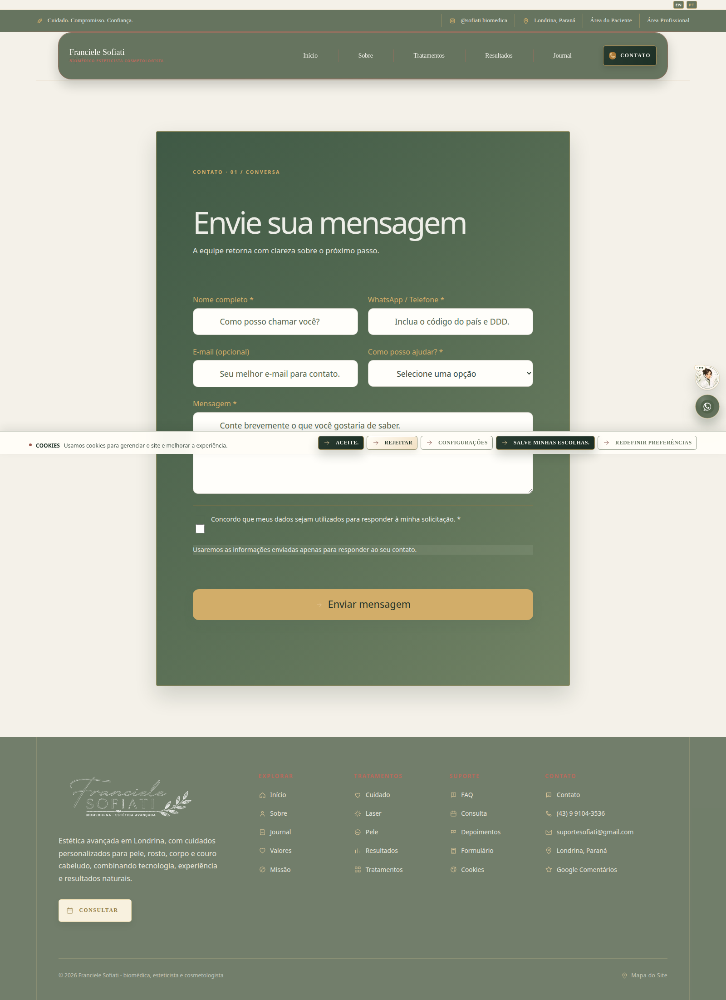
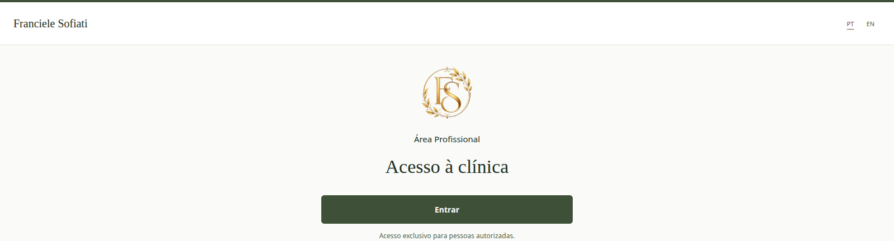

Seu site e seu sistema
Um passeio simples: o que as pessoas veem, como chegam até a clínica e como a equipe organiza o atendimento.
A porta de entrada
O site apresenta você, explica sua forma de cuidar e ajuda a pessoa a encontrar informações antes de conversar com a clínica.
Os menus levam a tratamentos, cuidados, artigos, informações sobre você e contato. O botão de idioma troca português e inglês.
Tratamentos e conteúdos
As páginas explicam os tipos de cuidado e o que considerar. Os textos ajudam a pessoa a chegar à conversa mais informada.
Não é preciso decorar os nomes. Se alguém perguntar, você pode orientar a visitar a página ou falar com a clínica.
Contato e pré-cadastro
Na página de contato, a pessoa encontra os canais para falar com a clínica. O pré-cadastro recolhe informações básicas para a equipe retornar.
Quando chega um novo formulário, a equipe confere os dados e dá continuidade pelo sistema.

Um espaço reservado
O sistema não é o site público. É uma área de trabalho protegida, usada apenas por pessoas autorizadas da clínica.
Cada pessoa entra com seu próprio acesso. Ao terminar em um computador compartilhado, escolha Sair.

Um lugar para cada tarefa
O menu reúne as áreas do trabalho diário. Pense nele como gavetas organizadas: cada uma guarda um tipo de informação.
Do contato ao atendimento
1. Veja os novos formulários.
2. Confira a agenda.
3. Registre tarefas e retornos.
4. Abra o cadastro necessário para cada atendimento.
Registro cuidadoso
Profissionais autorizados usam o prontuário para avaliação, histórico de saúde, plano, evolução e consentimentos.
Salve enquanto trabalha e finalize depois de revisar. Se precisar corrigir um registro finalizado, use um adendo.
Cuidado também é proteger
Use seu acesso individual, confira a pessoa antes de registrar e encerre a sessão quando terminar.
Não compartilhe telas de prontuário por mensagens. Em caso de dúvida, pare e peça ajuda à pessoa responsável pelo sistema.
Site para apresentar.
Sistema para organizar.
O site acolhe e informa. O sistema ajuda a equipe a cuidar da rotina e manter os registros organizados.
Se surgir uma dúvida, fale com a pessoa responsável pelo sistema.